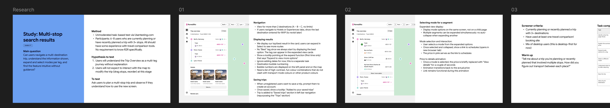
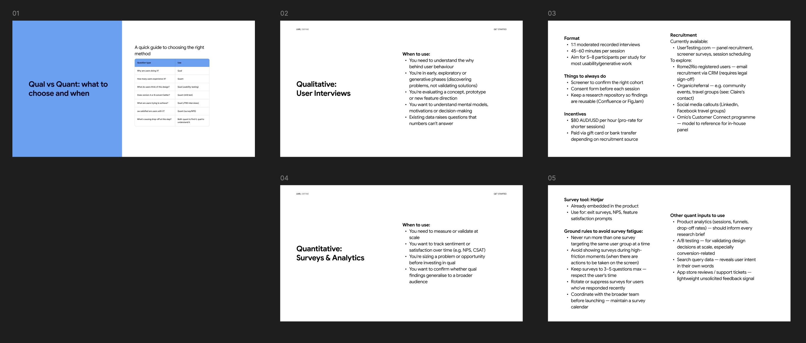

My role
Product Design Lead
Stakeholders
Product, engineering, brand
Outcome
Research as habit, not event

The problem
Rome2Rio was making product decisions without a strong, continuous picture of how users think and behave. Research happened in isolation – testing a feature after it was already designed, validating hunches rather than informing strategy upfront. There was no way for the team to access what we'd learned, and no mechanism to turn user understanding into a competitive advantage.
The core principle
Research informs strategy; it doesn't validate features. When there's nothing specific to test, there's still plenty to learn. Exploratory qual research is where the real strategic value is.
What I built: three phases

"Make UXR a habit, not an event. Start lightweight and build trust."
How it works
Every two weeks, we run a 30-minute exploratory interview with a participant from our panel. Topics flex based on what the team is thinking about – discovering pain points in trip confidence, understanding mental models around multi-stop routes, or learning how users switch between devices. No prepared prototype, no script – just conversation.
Findings go into a shared Confluence repo that the whole team can access. Each study has: question asked, method, key findings, and implications. Engineers can pull details directly with AI tools. Product leads see what users said in context, not in isolation. Designers reference real quotes when justifying decisions in critique.
A Slack channel surfaces standout observations monthly. Quarterly planning includes a "what we heard" slot where research findings de-risk strategic bets before they're committed to.
